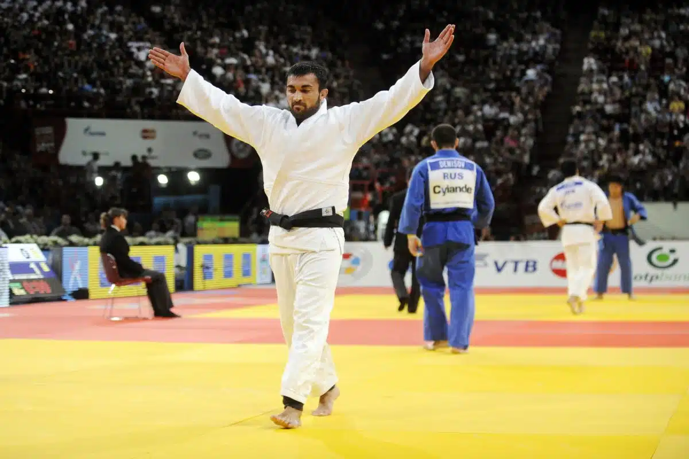
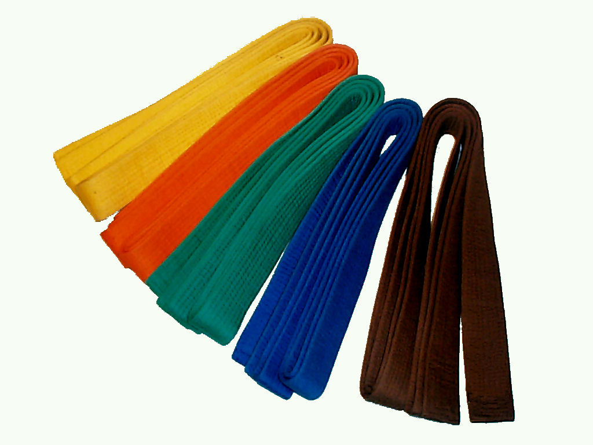

Grandes Atletas

Ilias Iliadis
Ilias Iliadis, nascido na Geórgia e naturalizado grego, é um dos judocas mais destacados da história.
Ele conquistou seis medalhas em campeonatos mundiais, incluindo três títulos em 2000, 2011 e 2014, além de duas pratas em 2005 e 2007.
Nos Jogos Olímpicos, Iliadis brilhou ao ganhar o ouro na categoria até 81kg em Atenas 2004 e o bronze em Londres 2012.
Ryoko Tani
Ryoko Tani é amplamente reconhecida como uma das maiores judocas de todos os tempos.
A atleta japonesa conquistou dois ouros olímpicos, em Sydney 2000 e Atenas 2004, e foi sete vezes campeã mundial.
Antes de suas vitórias olímpicas, Tani já havia garantido duas pratas, em Barcelona 1992 e Atlanta 1996.
Nos Jogos de Pequim 2008, ela completou sua coleção olímpica com uma medalha de bronze, totalizando cinco medalhas nos Jogos Olímpicos.
Yasuhiro Yamashita
Yasuhiro Yamashita, um dos melhores judocas de todos os tempos, é amplamente aclamado por suas conquistas impressionantes.
O japonês brilhou ao conquistar a medalha de ouro nos Jogos Olímpicos de Los Angeles em 1984 e fez história com quatro títulos mundiais na categoria peso pesado, além de uma medalha de ouro na categoria absoluta.
Conhecido como o “Pelé do Judô”, Yamashita manteve uma notável invencibilidade contra adversários internacionais, acumulando 203 vitórias consecutivas antes de se aposentar em 1985.
Sua carreira também é marcada por sua performance no All-Japan Judo Championships, onde se tornou o vencedor mais jovem da competição, ganhando seu primeiro dos nove títulos consecutivos aos 19 anos.
Embora pudesse ter adicionado mais uma medalha olímpica ao seu currículo, a ausência do Japão nos Jogos Olímpicos de Moscou em 1980, em protesto à invasão soviética no Afeganistão, impediu essa conquista.
Teddy Riner
Reconhecido como um dos melhores judocas de todos os tempos e um dos melhores na atualidade, o francês Teddy Riner construiu um legado impressionante ao longo de sua carreira.
Entre seus principais feitos, destacam-se quatro títulos olímpicos, 10 medalhas de ouro no Campeonato Mundial e cinco conquistas no Campeonato Europeu. Inclusive, foi campeão novamente em Paris 2024, onde também foi porta-bandeira.
Riner manteve uma invencibilidade notável de setembro de 2010 a fevereiro de 2020, acumulando 154 vitórias consecutivas antes de ver sua sequência ser interrompida pelo japonês Kokoro Kageura no início de 2020.
Willem Ruska
Willem Ruska, judoca holandês, é o único na história a conquistar duas medalhas de ouro em uma única Olimpíada. Nos Jogos de Munique, em 1972, ele venceu nas categorias pesados e absoluto, sendo considerado um dos melhores judocas de todos os tempos.
Além de seu sucesso olímpico, Ruska foi bicampeão mundial em 1967 e 1971, e vice-campeão em 1969. Ele também acumulou sete títulos em campeonatos europeus. Após sua brilhante carreira no judô, Ruska se dedicou ao wrestling.
Equipamentos
Judogi(Kimono):
O uniforme usado pelos judocas. É composto de uma jaqueta grossa, calças e uma faixa. O judogi deve ser resistente, pois é puxado e agarrado durante as lutas.

Faixa(Obi):
Utilizada para segurar a jaqueta do judogi e indicar a graduação do praticante. As cores variam conforme o nível do judoca, começando pelo branco e avançando até o preto.

Tatame:
O piso acolchoado onde as lutas e os treinos ocorrem. O tatame proporciona uma superfície segura para quedas e arremessos.
Protetor Bucal:
Usado para proteger os dentes e a boca durante os combates. Não é obrigatório, mas recomendado, especialmente em competições.
Protetor Genital:
Opcional para maior segurança, especialmente em competições.
Protetores de Seios:
Algumas judocas (femininas) utilizam protetores de peito para maior proteção durante os combates.